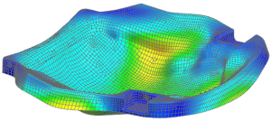

查看位移结果
我们将加载优化结果以确定节点7459处的位移不超过0.3 mm。
 后处理导航器
后处理导航器
-
 座椅盘优化
座椅盘优化 -
 加载
加载 -
 座椅盘优化(展开) 设计循环 35 – 子工况 – 静态载荷 1(展开)
座椅盘优化(展开) 设计循环 35 – 子工况 – 静态载荷 1(展开) 设计循环 31中包含最终优化迭代的结果。
注释
注意到只有第一次优化迭代与最后一次优化可用，您可以通过选择保存 OP2 文件选项中的全部来保存所有优化迭代结果。
可以忽略任何显示在后处理导航器结果列表中的“pseudo load cases”，优化将在迭代优化过程中生成这些载荷工况以供内部使用。
-
 位移 — 节点的
位移 — 节点的
-
 标识结果
标识结果 -
节点结果
按节点 ID

-
文本框
7459
-
 应用 ID 字符串
应用 ID 字符串在标识对话框中，确认位移未超过0.3 mm 的设计约束。
-
关闭